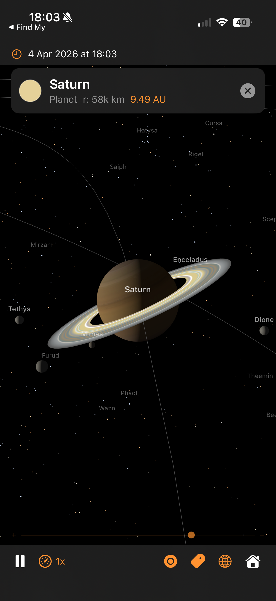

Architecture — real orbital mechanics, GPU-accelerated rendering, and the techniques behind each part

Saturn with Cassini ring textures, moons, and real star names
The camera orbits a target point at a given distance, controlled by azimuth and elevation angles:
Orbital mechanics and SceneKit use different conventions for which axis points “up”. Every position computed by the physics engine has to be remapped once before it reaches the scene graph. The swap is a constant, so it's cheap — but getting it wrong puts the planets underneath each other or flips the direction of rotation.
Why negate y? Without the sign flip, orbits would run the wrong way round — planets would appear to orbit clockwise when viewed from the north ecliptic pole, which is the opposite of reality. The single sign flip converts right-handed ecliptic coordinates to SceneKit's left-handed frame.
This same mapping is applied to every position: planet centres, moon offsets, mission waypoints, trajectory samples, event label positions. Centralising it in SceneBuilder.updateNodePosition and MissionManager.toLocalGeocentricScene means we only have to get it right once.
The same source tree builds a native iOS app and a native macOS app. One Xcode target, two destinations, no Catalyst. The strategy is: make every file platform-neutral by default, and funnel the handful of genuine divergences through a single abstraction file plus a few narrowly-scoped #if blocks.
Extensions/Platform.swift)
Four typealiases resolve differently per platform. Every other file in the project references these names instead of writing UIColor / NSColor directly:
The rule is: outside this file, no direct reference to UIKit or AppKit types. Anything that would have been UIColor(red:…) is now PlatformColor(red:…), the result compiling as UIColor(red:…) on iOS and NSColor(red:…) on macOS.
#if DivergencesFour places need more than a typealias swap, because the API shape itself differs between platforms:
SolarSystemSceneView.swift). UIViewRepresentable needs makeUIView / updateUIView; NSViewRepresentable wants makeNSView / updateNSView. Both methods exist behind #if canImport(UIKit) in the struct, delegating to a shared configureSharedSceneView(_:context:) helper that does the 90% of setup that's identical.
applyPan, applyOrbit, applyPinchZoom methods so the camera maths is only written once.
SolarSystemViewModel.swift). Both platforms use CADisplayLink, just constructed differently: iOS takes the direct CADisplayLink(target:selector:) initialiser, macOS acquires the link from the SCNView via scnView.displayLink(target:selector:) (macOS 14+) so ticks stay synced to whichever display the window is on. An earlier Timer-based macOS path produced a visible ~1 Hz stutter because Timer cadence drifts in and out of phase with the 60 Hz VBlank — switched to the NSView-bound display link as soon as that was diagnosed.
ContentView.swift, CreditsView.swift). .statusBarHidden is iOS-only (macOS has no equivalent concept); navigationBarTitleDisplayMode and .topBarTrailing are iOS-only (macOS uses .confirmationAction); systemGroupedBackground is iOS-only (macOS has windowBackgroundColor). Guarded one-liner each.
The most subtle platform difference: SCNVector3.x is Float on iOS but CGFloat on macOS. Arithmetic like target.x -= right.x * dx * speed works on iOS (all Float) but fails on macOS (CGFloat can't subtract a Float without an explicit cast). Two helpers in SCNVector3+Math.swift hide the gap:
All the orbital maths already works in Double (SIMD3<Double>) for precision, so the Double-typed helpers drop in naturally. Call sites like target.adding(dx, dy, dz) or SCNVector3(x, y, z) compile unchanged on both platforms.
| Action | iOS input | macOS input |
|---|---|---|
| Pan (translate) | 1-finger drag | Left-mouse drag |
| Orbit | 2-finger drag | Right-mouse drag |
| Zoom | Pinch | Scroll wheel / trackpad pinch |
| Select body | Single tap | Single click |
| Reset | Double tap | Double click |
AppKit's Y axis is inverted relative to UIKit's (origin bottom-left vs top-left), so the macOS pan / orbit handlers flip dy before feeding it into the shared maths — this preserves the "drag up = look up" convention both platforms expect. Scroll-wheel zoom needs a custom NSView subclass (ScrollZoomSCNView) because NSGestureRecognizer doesn't cover scroll events, so we override scrollWheel(with:) directly.
The launch-argument path (-focus, -mission, -showISS, -timeScale, -date, etc.) is platform-neutral — it reads ProcessInfo.processInfo.arguments, which exists identically on both. On iOS you invoke with xcrun simctl launch booted com.pwilliams.SolarSystem -- -mission apollo11; on macOS you use open -n SolarSystem.app --args -mission apollo11. Same arg syntax, same behaviour, same mission playback.
The view model publishes currentDate and screenLabels every third frame (~20 Hz at 60 fps) so the date display and overlay labels stay fresh. Because ContentView observes the view model via @StateObject, every @Published change invalidates body. Left inline, the toolbar HStack and its five Menus would be reconstructed 20 times a second — in practice that interferes with menu hit-testing, dismisses popovers mid-tap, and makes dropdowns appear clipped.
The toolbar lives in its own ControlsBarView: View, Equatable sub-view that takes only the values it actually reads, as @Bindings plus action closures. A custom == compares the value-typed inputs and ignores the closures (which aren't Equatable). With .equatable() on the call site, SwiftUI runs that comparison on every parent rebuild and skips body evaluation when nothing toolbar-relevant has changed — so the open Menu survives intact. Same trick applied to MissionsMenu, which now takes @Binding activeMissionId + let missions + an onCancel closure rather than observing the whole view model.
Two related polish items rode along with the same fix. The speed menu's label is a Text(formatTimeScale(timeScale)) — without .lineLimit(1) + .fixedSize(horizontal: true, vertical: false) SwiftUI's HStack layout would wrap wide values like "100,000x" vertically, growing the toolbar's height. And the original Satellites menu was a single-item Menu wrapping a single ISS toggle; collapsed to a plain Button { showISS.toggle() } matching the orbits-toggle pattern next to it.
The app ran buttery-smooth on iOS but stuttered once a second on macOS at high time-scales. The hunt for the cause illustrates a reusable pattern: add cheap instrumentation behind a launch flag, look at the numbers, let the numbers point at the culprit. It's much faster than guessing.
Add a per-frame logger behind a -frameLog launch arg. Two things worth printing: the delta-t between ticks (is the display link stuttering?) and the work-time inside the handler (is our code slow?). Anomaly threshold: 20 ms (dropped frame at 60 Hz). Plus a once-per-second summary so the healthy baseline is visible alongside the anomalies.
Two patterns: spikes where work balloons (pos=196ms) and spikes where the tick gap is huge with no work (dt=256ms). The second shape is usually external (OS scheduler pause); the first is something we own.
updatePositions has five big blocks. Instrument each with a CACurrentMediaTime() stopwatch and print a sub-phase breakdown when a stutter fires. Output:
The bodies phase — the loop that updates planet positions and projects their labels — is consuming the entire budget. The other four phases are sub-millisecond. Drill deeper.
Wrap each projectLabel call with a stopwatch and log anything over 5 ms:
16.5 ms is exactly one 60 Hz display frame. Each SCNView.projectPoint call is blocking the main thread waiting for a render-thread sync — every single call. Twenty-six bodies × 16.5 ms = 400 ms of stalls per frame. That's the stutter.
projectPoint internally flushes pending SceneKit transform updates to make sure its answer is up-to-date. On iOS that flush is cheap; on macOS under heavy scene activity it waits for a full VBlank. Since we're projecting our own scene whose transforms we just set ourselves, we know they're up to date — we can compute the projection directly and skip the flush:
Per-label cost: ~100 ns. All 26 bodies projected in under a millisecond — effectively free. And the output is already in SwiftUI's top-left-origin coordinate system on both platforms, which also fixes the label-tracking inversion bug that was originally separate. Two bugs, one fix.
The -frameLog flag stays in the codebase — if anything similar ever creeps back, one command-line flag gives an instant diagnosis.
Once labels were fast, they turned out to be horizontally drifting on macOS — the Moon label would land tens of pixels to the left or right of the Moon, further from the centre of the view. Vertical tracking was fine. A single-axis error points straight at the aspect-ratio term in the projection matrix.
Root cause: camera.projectionTransform on macOS returns a matrix whose [0][0] doesn't track the current viewport aspect. Fix: build the matrix ourselves from camera.fieldOfView and view.bounds each frame. The conventional perspective matrix, with the convention difference between horizontal-FOV cameras (macOS default) and vertical-FOV cameras (iOS default):
One gotcha along the way: SCNCameraProjectionDirection only has .horizontal and .vertical cases — there is no .automatic despite the docs/convention suggesting one. Just switch on the two cases directly.
Second issue: labels were landing centred on each planet rather than above it, because the fixed 16 pt vertical offset in the SwiftUI overlay was dwarfed by Jupiter / the Sun at close zoom. Fix: offset each label upward by the body's real on-screen radius + a small margin, computed from the same cached projection matrix.
clip.w
pixelsPerUnit = yScale * (height / 2) // cached once per frame
The pixelsPerUnit factor comes directly from the projection matrix — it's the same quantity SceneKit uses internally to render the sphere as a circle of that radius. The 8 pt floor handles nodes with no SCNSphere geometry (stars, the ISS procedural model) so they still get a readable gap.
An earlier attempt used an empirical r / clip.w * 300 formula borrowed from the star-occlusion code. That constant was tuned for iOS portrait viewports and under-shoots widescreen Mac windows by 3–4×, so label offsets were too small and still landed on the disc. Lesson: don't fudge projection maths with empirical constants — derive them from the matrix.
summary line made it obvious that normal frames were 3 ms — so a 265 ms frame was 80× off, not 2× off.SCNView.projectPoint is convenient but opaque. A 10-line SIMD matrix-multiply does the same job, is provably synchronous, and happens to also be ~100× faster.[0][0] aspect term. Don't try to rule out the matrix; inspect it.r / w * 300 label-offset felt plausible on iOS, but was wrong on widescreen. yScale * height / 2 comes from the actual projection and works everywhere.Everything on screen comes from SceneKit primitives combined in specific ways. This section catalogues the techniques so you can reuse them.
Every planet and moon uses SCNMaterial with lightingModel = .physicallyBased. The key properties are:
Roughness near 1.0 gives a matt, powder-like appearance (the Moon, Mars, Mercury). Gas giants use slightly lower roughness (~0.7) for a subtle sheen from the cloud tops. A single point light at the Sun's scene position (plus low ambient to stop the night side going fully black) drives the PBR response.
Anything that shouldn't respond to scene lighting uses lightingModel = .constant. This tells SceneKit to display the diffuse colour directly, unaffected by angle or light position. Used for:
Bright glows are built with nested translucent billboards and blendMode = .add. Additive blending sums each layer's RGB into the framebuffer rather than alpha-blending, so overlapping glow layers build up brightness without ever darkening. Combined with writesToDepthBuffer = false (so the glow doesn't occlude what's behind it), this gives the soft corona look around the Sun and the mission vehicle markers.
The trajectory line is one connected polyline with a colour that varies along its length — bright white at launch, saturates into orange during coast, brightens at the flyby, dims on the return leg. We can't do this with a single uniform colour, so we use a per-vertex colour attribute via SCNGeometrySource(semantic: .color, ...).
SceneKit's .line primitive takes pairs of indices rather than a line-strip array, so a polyline with N samples needs 2(N−1) indices in the form [0,1, 1,2, 2,3, ...]. The vertex colour is linearly interpolated along each segment, giving a smooth gradient end-to-end for free.
SceneKit draws opaque objects front-to-back (depth-tested) and then transparent objects back-to-front. Markers and halos need to override the default ordering to stay visible on top of the planets:
writesToDepthBuffer = false on glows/markers stops them occluding each other.readsFromDepthBuffer = false on the vehicle marker core stops it disappearing when it flies behind a planet during a flyby.node.renderingOrder biases the draw order when depth won't do the right thing — e.g. the trajectory line (renderingOrder = 100) draws after planets (default 0) so it sits on top.
Three.js has Sprite for always-face-the-camera billboards; SceneKit has SCNBillboardConstraint. We avoid both for vehicle markers because a radially symmetric SCNSphere with constant lighting is a billboard — it looks identical from every viewing angle. Fewer moving parts, no constraint overhead, and the scale-by-camera-distance trick (max(0.04, camDist × 0.012)) keeps them visible at any zoom.
SF Symbols covers most of the toolbar (gauge, tag, circle, globe, house, antenna) but has no rocket glyph. Bundling a custom asset would break the "pure Apple frameworks" rule we follow elsewhere, so the missions dropdown uses RocketIcon — a tiny SwiftUI view that draws the shape with a Canvas and three Paths (nose cone + fuselage, fins, exhaust flame). The whole thing is under 40 lines, accepts .foregroundColor like an SF Symbol, and scales with dynamic type.
Reusable pattern for any small icon that doesn't have an SF Symbol equivalent. Cheaper than a bundled image (no asset-catalogue bookkeeping, no memory overhead for a raster), cleaner than emoji (tints properly, respects dynamic type), and more flexible than a filled Shape (multiple sub-paths at different opacities — e.g. the rocket's flame is drawn at 0.55 opacity for subtle transparency).
A planet is an SCNSphere; a texture is a flat rectangle. The bridge is a projection — a way to unwrap the sphere's surface into a 2D image so a texel on the image corresponds to a specific point on the surface.
Every NASA texture in Textures/ uses equirectangular (aka "geographic") projection: longitude maps linearly to U and latitude maps linearly to V.
SCNSphere applies this UV mapping by default, so all we do is load the image and hand it to material.diffuse.contents. The distortion is large near the poles (each latitude row of pixels covers the same map width, but a tiny actual circumference on the globe), which is why NASA texture maps tend to look stretched at the top and bottom — the sphere stretches them back out into the correct shape.
The rings are a flat disc, not a cylinder or tube, so we can't use SCNTube (its caps map linearly, producing straight bands instead of circular ones). We build custom geometry: 72 radial segments around the ring axis × 4 steps from inner edge to outer edge. The U coordinate is the radial fraction (0 at Cassini division inside, 1 at outer edge), V is the azimuthal position. The texture is a thin strip (915×64 pixels) representing a single radius of the ring system, which wraps around the disc as U varies.
The ring material combines a colour map in diffuse.contents (the bright cream bands, Cassini division, dust) with a transparency map in transparent.contents (the alpha GIF, dark where the ring is sparse). Rings are drawn isDoubleSided = true so they look right from above and below, and lightingModel = .constant because Cassini's photograph already baked in the correct lighting.
The Sun's surface texture is generated procedurally at app launch via UIGraphicsImageRenderer. A 1024×512 canvas gets 800 small "granulation" cells (bright Gaussian blobs), 40 larger "supergranulation" patches, and a radial limb-darkening gradient. This gives realistic convection-cell detail with zero bundled image assets. The corona textures (4 layers) are also procedural — just radial gradients from warm white to transparent.
All 11 missions ported from the companion web app: Artemis II, Apollo 8/11/13, Cassini-Huygens, Voyager 1/2, Perseverance, New Horizons, Parker Solar Probe, BepiColombo. Waypoint data is extracted one-shot from the web JS into Missions.json (bundled resource). Phases 4–6 add the UI layer, ISS, and the lazy-follow mission camera. See ../solarsystem-web/MISSIONS.md for the shared specification.
Mission data is a handful of waypoints (typically 15–25 per vehicle), not a continuous curve. To render a smooth trajectory we interpolate between waypoints, and to anchor that curve to the right places in space we apply several transforms before sampling.
Standard “uniform” Catmull-Rom splines overshoot badly whenever control points are irregularly spaced — common on mission trajectories with dense waypoints near launch (seconds apart) and sparse waypoints during coast (hours apart). The centripetal variant (alpha = 0.5) uses sqrt of chord length as the knot spacing, which eliminates overshoot and self-intersection in practice.
Three interpolations at the first level, two at the second, one at the third, all the way down to the final point. This is the same structure Three.js's CatmullRomCurve3 uses, ported one-to-one to Swift in CatmullRom.centripetal.
Waypoints have timestamps (e.g. “TLI at T+2:83h”). If we sampled the curve uniformly along arc length, the dense launch waypoints would eat most of the line while the lunar coast compressed to a few pixels, and the marker wouldn't line up with the event banners in time. Instead, we sample uniformly along time and map each time back to the curve parameter:
Lunar-mission waypoints are hand-authored in a frame where +X points toward the Moon at flyby time. This lets a trajectory designer reason about "the spacecraft passes 6,000 km behind the far side of the Moon" without caring about the absolute ecliptic longitude of the Moon on the mission's launch date.
At initialisation, we compute the Moon's actual ecliptic direction at flyby time and rotate all waypoints by the difference:
Hand-authored waypoint coordinates drift: a waypoint labelled “Jupiter flyby” might sit at approximate (x=4.5, y=-2.3) AU but Jupiter's actual Keplerian position at that date could differ by 0.05 AU. Over tens of waypoints that's enough to make the trajectory visibly miss the planets it's meant to be flying past.
The anchor system solves this by snapping key waypoints to the real planet / Moon positions at their timestamps:
Why use the semi-major axis for anchorMoon distance instead of the Moon's actual distance? The Moon's real distance oscillates by ±21,000 km due to eccentricity. The rendered Moon mesh sits at a fixed distance (its semi-major axis) because its scene radius comes from the moon-distance compression formula. If we snapped waypoints to the actual distance, the trajectory line would miss the rendered Moon mesh by up to 21,000 km of compressed scene distance.
Perseverance's data is just two anchor points — Earth at launch, Mars at arrival. A straight line between them would be visibly wrong (spacecraft don't fly in straight lines across the solar system). The transfer-arc generator expands those anchors into a Hohmann-style elliptical arc:
The sin(π × frac) term peaks at frac=0.5 and is zero at the endpoints, which is exactly the shape of a Hohmann transfer ellipse: widest at the midpoint, pinched at launch and arrival. 12 intermediate samples per segment produces a visibly smooth arc when handed to the CatmullRom resampler.
Some mission phases can't be expressed as waypoints because they need to stay glued to the Moon as the Moon itself moves. Columbia orbiting the Moon for 65 hours, Eagle's lunar descent and ascent — these get their marker position computed every frame relative to the Moon's current scene position.
For moonLanding, the marker just snaps to moonScenePos for the whole window. At trajectory scale, the real 45 km descent is invisible after distance compression, so the visually correct choice is to stick the vehicle to the Moon's surface rather than try to model it.
When a lunar mission is selected, the camera needs to frame the trajectory tightly so the user sees the arc clearly, and it needs to keep framing it tightly as Earth drifts along its heliocentric orbit during the replay. Heliocentric missions don't need this — the overview camera already works — so the lazy-follow logic is geocentric-only.
Why the sign flip in atan2? The camera's spherical coordinates describe its offset from the target (Earth). The Sun is at the scene origin, so the direction "from Earth toward the Sun" is −earthPos / |earthPos|. Using atan2(−x, −z) places the camera in that direction — on the Sun side of Earth. Using atan2(x, z) (unsigned) would place the camera on the anti-Sun side and the target would appear unlit.
The 0.55 rad (~31°) offset rotates the camera slightly so the terminator is on the far side of Earth (viewed from the camera), giving us a two-thirds-lit crescent rather than a head-on disc. The 17° elevation gives enough perspective that the trajectory's out-of-plane component reads properly. The same azimuth formula is also used for planet preset focus, so selecting Jupiter or Saturn from the planet picker gives a cinematic Sun-lit view of the planet and its moon system.
The 1.4× padding is a phone-portrait sweet spot — a narrow viewport needs more leeway than a wide one so the trajectory isn't clipped at the left/right edges. The minimum clamp of 1.5 scene units prevents the camera being so close to a small trajectory that the Earth mesh intersects the near clip plane.
Earth moves through its heliocentric orbit at 1/365th of a revolution per day of simulated time. At a 10,000× replay speed, that's 30° of ecliptic motion per mission — enough to shift the trajectory off-centre if we didn't track. Each frame:
The 0.02 lerp factor is a trade-off: larger values (0.1+) cause visible stutter as the camera jumps; smaller values (0.005) feel sluggish because the trajectory drifts off-centre before the camera catches up. 0.02 closes most of the gap within half a second of wall time regardless of replay speed.
The moment the user drags or pinches, we stop following — nothing worse than fighting an auto-camera. The scene coordinator's pan / orbit / pinch handlers fire a userInteractionHandler callback on gesture .began (not on every .changed delta, which would spam). The view model flips lazyFollowActive = false, and stepLazyFollowCamera becomes a no-op for the rest of the session.
Mission events (TLI, Lunar Flyby, LOI, Splashdown, …) get 3D labels projected onto the SwiftUI overlay. We don't want them cluttering the screen for the full replay — each label should appear briefly around when its event fires and then fade.
The 3% rule means a 195-hour Apollo 11 mission has a ~6-hour visibility window per label. At 10,000× replay, that's about 2 seconds of real time: long enough to read, short enough that labels don't pile up. The 500-hour upper clamp prevents Voyager-length missions (28,000 h, 105,000 h) from giving each label weeks of visibility and effectively always showing everything.
Every frame, the app converts wall-clock time into planet positions through classical orbital mechanics:
Each planet's orbit is an ellipse defined by six Keplerian elements:
sceneDistance = log(1 + AU / 0.5) × 15
Mercury ≈ 7.5, Earth ≈ 16.5, Jupiter ≈ 36.5, Neptune ≈ 63 scene units
sceneRadius = √(km) × 0.00125
Jupiter ≈ 0.33 (3.3× Earth), Earth ≈ 0.10, Mercury ≈ 0.06. Min 0.03 planets, 0.012 moons.
moonSceneDist = parentSceneRadius × (realRatio0.6) × 1.5
Earth's Moon (real 60.3× parent radius) → pow(0.6) → 11.7 → ×1.5 → 17.6× parent radius. The exponent trades physical accuracy against visibility: 1.0 would place the Moon off-screen at every sensible zoom; 0.4 (the original) placed it at 8.8× but made Galilean moons bunch too tightly around Jupiter. 0.6 is the sweet spot where Earth-Moon reads as "far" and Jupiter's moons stay readable.
The same formula is used for mission trajectory compression so Apollo trajectories sit at the same scale as the Moon they pass — see the Mission Trajectory Maths section.
Real radii vs scene radii (√ scaling). The bars show how sqrt compresses the 175:1 real range into a visually useful 5.5:1 range:
8,404 stars from the Yale Bright Star Catalog 5th Rev. (Hoffleit & Warren, 1991, prepared at NASA Goddard NSSDC/ADC; public domain), filtered to naked-eye visibility (magnitude ≤ 6.5). Each star has right ascension, declination, visual magnitude, and B-V colour index.
mag < 1.5: 3–8px (~20 stars: Sirius, Vega, Arcturus) • mag 1.5–3.5: 2–5px (~200 stars) • mag 3.5–5.0: 1.5–3px (~1,500 stars) • mag 5.0–6.5: 0.8–2px (~7,000 stars, Milky Way structure)
Every body rotates at its real sidereal rate, with correct axial tilt (obliquity) and prime meridian orientation at J2000.0:
Why quaternions instead of Euler angles? SceneKit composes Euler angles in Y-X-Z order, which means setting eulerAngles = (tilt, spin, 0) applies yaw-then-pitch — so the tilt axis itself rotates with each spin cycle. The rings appear to oscillate once per planetary day. Quaternion composition tiltQuat * spinQuat applies spin in the body's pre-tilt frame (local Y), then tilts in world space — the tilt axis stays fixed while the body spins around the tilted pole, just like the real thing.
Saturn's rings are a child node; we cancel the parent's spin in the ring's local frame with ringNode.simdOrientation = simd_quatf(angle: -spin, axis: (0,1,0)) so the rings inherit only the tilt and stay fixed in the equatorial plane while the cloud bands rotate underneath.
Rings share Saturn's axial tilt but do not spin with the planet. Each frame: ringNode.eulerAngles.y = -spin cancels the parent's rotation.